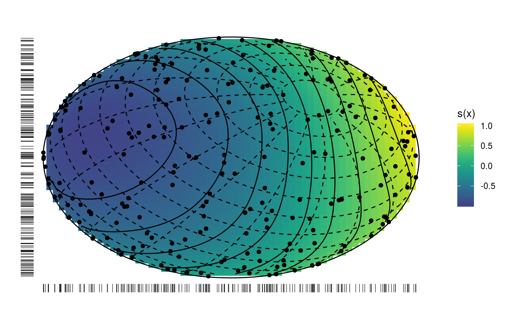
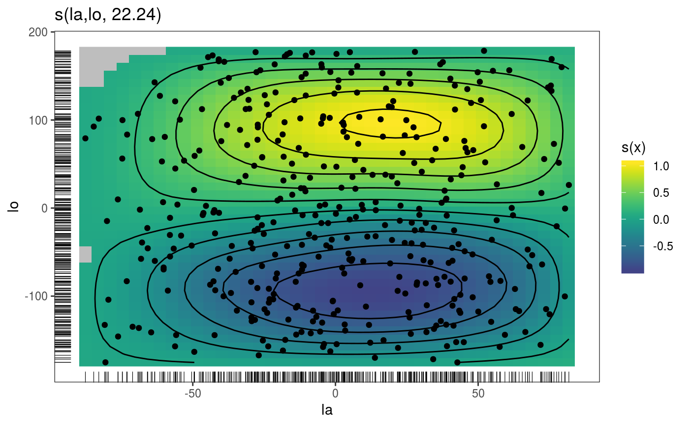

This is the plotting method for smooth effects on the sphere.
# S3 method for sos.smooth plot( x, n = 40, xlim = NULL, ylim = NULL, maxpo = 10000, too.far = 0.1, phi = 30, theta = 30, trans = identity, scheme = 0, seWithMean = FALSE, unconditional = FALSE, ... )
| x | a smooth effect object, extracted using mgcViz::sm. |
|---|---|
| n | sqrt of the number of grid points used to compute the effect plot. |
| xlim | if supplied then this pair of numbers are used as the x limits for the plot. |
| ylim | if supplied then this pair of numbers are used as the y limits for the plot. |
| maxpo | maximum number of residuals points that will be used by layers such as
|
| too.far | if greater than 0 then this is used to determine when a location is too far from data to be plotted. This is useful since smooths tend to go wild away from data. The data are scaled into the unit square before deciding what to exclude, and too.far is a distance within the unit square. Setting to zero can make plotting faster for large datasets, but care then needed with interpretation of plots. |
| phi | one of the plotting angles, relevant only if |
| theta | the other plotting angle, relevant only if |
| trans | monotonic function to apply to the smooth and residuals, before plotting. Monotonicity is not checked. |
| scheme | if 0 the smooth effect is plotted on the sphere. If 1 the smooth effect is plotted on the two hemispheres. |
| seWithMean | if TRUE the component smooths are shown with confidence intervals that include the uncertainty about the overall mean. If FALSE then the uncertainty relates purely to the centred smooth itself. Marra and Wood (2012) suggests that TRUE results in better coverage performance, and this is also suggested by simulation. |
| unconditional | if |
| ... | currently unused. |
An objects of class plotSmooth.
Marra, G and S.N. Wood (2012) Coverage Properties of Confidence Intervals for Generalized Additive Model Components. Scandinavian Journal of Statistics.
library(mgcViz) set.seed(0) n <- 400 f <- function(la,lo) { ## a test function... sin(lo)*cos(la-.3) } ## generate with uniform density on sphere... lo <- runif(n)*2*pi-pi ## longitude la <- runif(3*n)*pi-pi/2 ind <- runif(3*n)<=cos(la) la <- la[ind]; la <- la[1:n] ff <- f(la,lo) y <- ff + rnorm(n)*.2 ## test data ## generate data for plotting truth... lam <- seq(-pi/2,pi/2,length=30) lom <- seq(-pi,pi,length=60) gr <- expand.grid(la=lam,lo=lom) fz <- f(gr$la,gr$lo) zm <- matrix(fz,30,60) require(mgcv) dat <- data.frame(la = la *180/pi,lo = lo *180/pi,y=y) ## fit spline on sphere model... bp <- gam(y~s(la,lo,bs="sos",k=60),data=dat) bp <- getViz(bp) # Plot on sphere plot(sm(bp, 1), scheme=0) + l_fitRaster() + l_fitContour() + l_points(shape = 19) + l_rug() + l_coordContour() + l_bound()# Plotting as in standard 2D plots plot(sm(bp, 1), scheme=1) + l_fitRaster() + l_fitContour() + l_points(shape = 19) + l_rug()